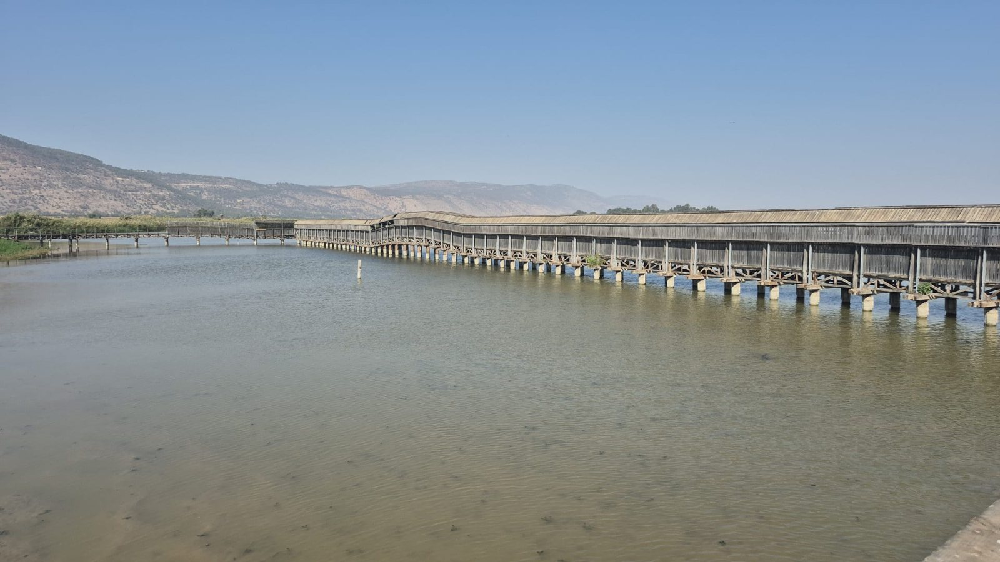

אגמון החולה · מצגת התמונות הרשמיתמאפיינים ושיווק · נושא 11
כל 84 המושגים מרשימת 2026, ועוד מושגים שנשאלו בבגרות בשנים קודמות. ליד כל מושג: באילו שנים נשאל, ובאיזה שקף לומדים אותו.
איך עונים
ביקוש קשיח (2026): המחיר משתנה, אבל הכמות המבוקשת כמעט לא משתנה, כי המוצר הכרחי. דוגמה: תרופות. בתיירות: צליין שמגיע לחג הפסחא בירושלים יבוא גם אם המלונות התייקרו.
תגית ירוקה = השנים שבהן המושג נשאל. "—" = עוד לא נשאל, אבל הוא ברשימת 2026.
מה חוזר
| מושג | שנים | ברשימה |
|---|---|---|
| שיט חופים / נוסע בשיוט | 2019, 2021, 2022, 2026 | 12 |
| חאג', עומרה וזיארה | 2018, 2022, 2023, 2024, 2025 | לא ברשימה |
| חליפין, ברטר, שוק ושיטה מוניטרית | 2018, 2019, 2021, 2022 | 38–40 |
| קו מוצרים | 2018, 2023, 2026 | 74 |
| היצע | 2019, 2021 | 42 |
| ייצוא סמוי | 2024, 2025 | 2 |
| מושג | שנים | ברשימה |
|---|---|---|
| סיור תמריץ | 2021, 2023 | 29 |
| אגריטק | 2023, 2026 | 26 |
| תיירות עירונית | 2018, 2026 | 33 |
| מיצוב | 2023, 2026 | 81 |
| שיווק נישה | 2024, 2026 | 65 |
| שמיים פתוחים / מוגבלים | 2023, 2024 | 17–18 |
גם בהאים ותמהיל התקשורת נשאלו פעמיים, והם לא ברשימת 2026. הם בשקפים האחרונים.
רשימת 2026 · מושגים 13–22
רשימת 2026 · מושגים 23–35
| # | מושג | נשאל | לומדים ב |
|---|---|---|---|
| 23 | תיירות עסקים | — | מישור החוף 2 |
| 24 | תיירות כנסים | — | מישור החוף 2 |
| 25 | תערוכות וירידים | — | מישור החוף 2 |
| 26 | אגריטק | 2023, 2026 | מישור החוף 3 |
| 27 | IMTM | — | מישור החוף 3 |
| 28 | יריד הספרים הבינלאומי | — | ירושלים 6 |
| 29 | סיור תמריץ | 2021, 2023 | מישור החוף 1 |
רשימת 2026 · מושגים 48–59
נשאלו בבגרות · לא במיקוד 2026 · 1/2
הם לא ברשימת 2026, אולי רק בגלל המיקוד של השנה. הם יכולים לחזור.
נשאלו בבגרות · לא במיקוד 2026 · 2/2
הם לא ברשימת 2026, אולי רק בגלל המיקוד של השנה. הם יכולים לחזור.
תרגול · עונים בסטודיו
סיכום